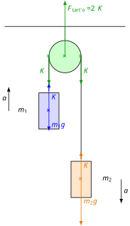

Atwood ejtőgépe
Elhanyagolható tömegű, nyújthatatlan fonal
Ez egy fizikafeladatokban gyakran szereplő idealizáció. A fonal tömege általában elhanyagolható a kísérletekben, és a megnyúlása is. Milyen egyszerűsítést is jelent ez pontosan?
- Az elhanyagolható tömeg azt jelenti, hogy a fonal gyorsításához nem szükséges erő, tehát a végein pontosan ugyanakkora erőt fejt ki. Ha ugyanis a fonal egyenes, meg van feszítve (vavy ilyen darabokra osztható), akkor a gyorsulása a második törvény alapján:
Itt és a két végen kifejtett erők, melyer ellentétes irányúak. Ha , akkor:
Az elhanyagolható tömegű, egyenesre kifeszített fonal a két végén egyenlő erőt fejt ki. A fonal által kifejtett erő természetesen a fonal irányába mutat, nincs a fonalra merőleges komponense.
- A nyújthatatlan fonal két vége megfeszített állapotban egyenlő mértékben mozdul el a fonal irányába. Ezáltal a fonal hossza nem változik az elmozdulás során. Legyen a végpontok által a fonal irányába megtett út és . Ekkor:
Itt a fonal megnyúlása. Ez nulla, tehát:
Itt a sebességek a végpontok sebességeinek fonalirányú komponensei. Ha a fonal végei csak a fonal irányába mozdulnak el, tehát nincs a fonal végpontjának a fonalra merőleges sebességkomponense, akkor a végpontok gyorsulásai is egyenlők:
Itt tehát a gyorsulások megegyeznek, de ez csak akkor igaz, ha a végpontok elmozdulása tisztán a fonalirányú haladó mozgás következménye. Ez nem igaz például egy ingára, ahol az inga sebessége merőleges a fonalra. Ingánál a fonal hossza nem változik, ha a fonal nyújthatatlan, de nincs a sebességnek a lengő végpontnál fonalirányú komponense. A fonalra kötött test körmozgásával, mint amilyen az inga lengése is, a későbbiekben foglalkozunk részletesebben.
A nyújthatatlan fonal két végpontjának gyorsulása egyenlő nagyságú, amennyiben a végpontok sebessége tisztán fonalirányú.
Elhanyagolható tömegű csiga
Később a forgómozgás tanulmányozása során látni fogjuk, hogy az elhanyagolható tömegű csiga megforgatásához nincs szükség forgató hatásra, tehát az ilyen csiga csupán megváltoztatja a rajta átvetett kötél és ezzel a kötél által kifejtett erő irányát, viszont nem változtatja meg a kötél által kifejtett erő nagyságát. A csigára ható eredő erő is mindig nulla, hiszen a csiga tömege nullának tekinthető.
Az elhanyagolható tömegű csiga szerepe csupán a kötélerő irányának megváltoztatása, de az erő nagyságát nem változtatja meg. Az elhanyagolható tömegű csigára ható erők eredője is nulla.
Atwood ejtőgépe
Rögzítsünk egy csigát a plafonhoz, amelyen fonalat vetünk át. A fonal két végére egy-egy testet akasztunk, a fonal szálai függőlegesek a testeknél. A fonal elhanyagolható tömegű, nyújthatatlan fonal. A csiga is elhanyagolható tömegű. A súrlódást és közegellenállást is elhanyagoljuk. Mekkora a fonalra kötött testek gyorsulása? Mekkora a fonalban ébredő erő? Mekkora erővel húzza a csiga a felfüggesztést a plafonon?
Az alábbi ábra az ideális Atwood-ejtőgépet mutatja:

Felírjuk a második törvényt mindkét testre:
A kötélerőt kifejezzük az első egyenletből és beírjuk a második egyenletbe, majd az egyenletet megoldjuk -ra:
Most kiszámítjuk értékét:
A rendszer súlya (felfüggesztést húzó erő):
Kísérlet
Feladatok
- Számítsuk ki a videón látható Atwood-gép gyorsulását a tömegek alapján! Számítsuk ki ugyanezt az elmozdulás és az idő alapján! Hasonlítsuk össze az eredményeket is!
- A videón látható Atwood-gép esetében mutassuk ki, hogy a mechanikai energia megmarad, tehát az indítás pillanatában a helyzeti energia és mozgási energia összege egyenlő az érkezéskor a helyzeti és mozgási energia összegével, a padlóval való ütközést közvetlenül megelőző pillanatban!
- Mennyivel süllyedt a rendszer tömegközéppontja? Mennyi idő alatt történt a változás? Számítsuk ebből ki a tömegközéppont gyorsulását! Mutassuk meg, hogy ez megegyezik a tömegközéppont-tételből számított gyorsulással!